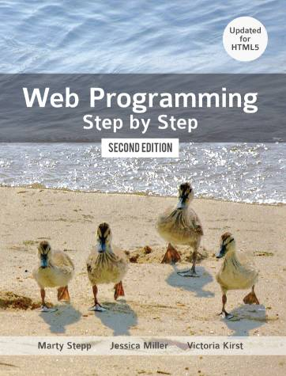
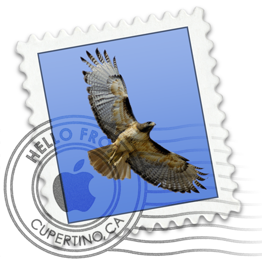
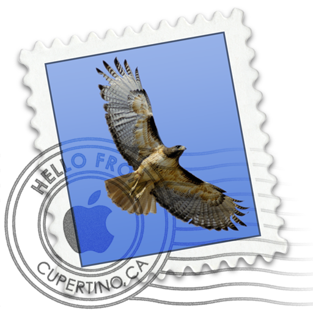

About Me
My father once told me “Whenever you feel like criticizing any one,” he said, “just remember that all the people in this world haven’t had the advantages that you’ve had.” He didn’t say any more, but we’ve always been unusually communicative in a reserved way, and I understood that he meant a great deal more than that. In consequence, I’m inclined to reserve all judgments, a habit that has opened up many curious natures to me and also made me the victim of not a few veteran bores.Interests
Some things that interest me“So we beat on, boats against the current, borne back ceaselessly into the past.”
I love Jesus but I still drink beer-Thomas Rhett
SCUBA diving, Frisbee, hunting/shooting, mountain biking, any kind of sports, etc..
Courses
CSCI 1301
This course is an introduction to algorithms, programs, and computing systems as well as fundamental techniques of program development and supportive software tools. Class is centered around programming projects and applications in a structured computer language (Java)
CSCI 1302
This class is an introduction to remote programming using the command line, utilizing software development techniques in an object-oriented computer language (Java). An intermediate programming course with projects emphasizing systems methods, top-down design, testing, modularity, and structured techniques such as polymorphism and interfaces. Applications from areas of numeric and non-numeric processing and data structures
CSCI 1730
This course offers instruction of programs and programming techniques used in systems programming in UNIX environments. Focus on UNIX system call interfaces and the interface between the UNIX kernel and application software running in UNIX environments. Focuses on learning a second language (C/C++), culminating in a final project of creating a terminal emulator
CSCI 4300
The class offers a first-hand look at client-side and server-side techniques and languages for use on the World Wide Web. Interactive, dynamically-generated, and database-enabled web pages are discussed and created using a combination of HTML, CSS, and multiple other programming languages. Course content changes frequently to incorporate new Internet technologies
Experience
Previous work experienceIT INTERN: ASSOCIATES IN ORTHOPEADICS AND SPORTS MEDICINE (2014)
- assisted in maintenence of multi-machine network
- responsible for handling minor techincal issues
- helped/watched with surgeries
STAFF: RUSH ATHENS TRAMPOLINE PARK (2014-2015)
- yelled/whistled at kids
- destroyed 12-20 year olds in dodgeball #cannonArm
- mastered a "full" tumbling flip
HTML/CSS INSTRUCTOR: FOUR ATHENS (2014-2015)
- led classes of 4-14 elementary students and taught basic HTML and CSS
- created lesson plans for a 4 week course
TEACHING ASSISTANT: COMPUTER SCIENCE DEPARTMENT, UNIVERSITY OF GEORGIA (2016-PRESENT)
- help answer questions and facilitate learning in lab
- grading lab assignments and quizzes
- recieve enjoyment
Skills
Not sure how to format these yet..-extensive knowledge of microsft office (who doesn't put this, even if it's not true)
-read/write/debug Java, C, C++ code
-above average? understanding of Linx/Unix/command line interface
-can write a decent 5 page paper in 9 hours the night before it's due
-clearly have knowledge of HTML/CSS, hopefully can add JavaScript, Ajax, etc to the list
-wouldn't be a skills list if it didn't say "detail oriented" and "self-motivated" or "driven"
-pretty good first-person-shooter video game player. Add me on xbox
Connect
Div containg links to social media probably div these up somehow, maybe make them a sticky to the bottom?
 
